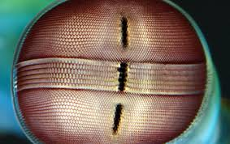
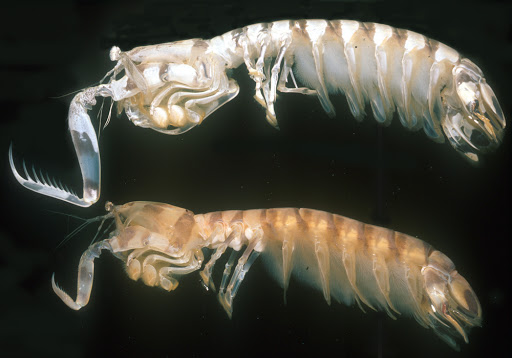

Stomatopoda
É um animal bastante peculiar, seu nome científico é Odontodactylus scyllarus, sua classificação científica é Animalia Arthropoda Crustacea Malacostraca Hoplocarida Stomatopoda.

Alta percepção de cores
A Stomatopoda tem uma percepção de cores bem maior que nós humanos, o que faz essa criatura enxergar um mundo completamente diferente do nosso.
É um predator nato
Ele move suas garras a uma velocidade de de um tiro de um rifle calibre 22 e com uma força enorme, mas tão enorme que este animal não é colocado em aquários pois pode quebrar o vidro.
referências bibliográficas
https://theoatmeal.com/comics/mantis_shrimp
https://pt.wikipedia.org/wiki/Stomatopoda